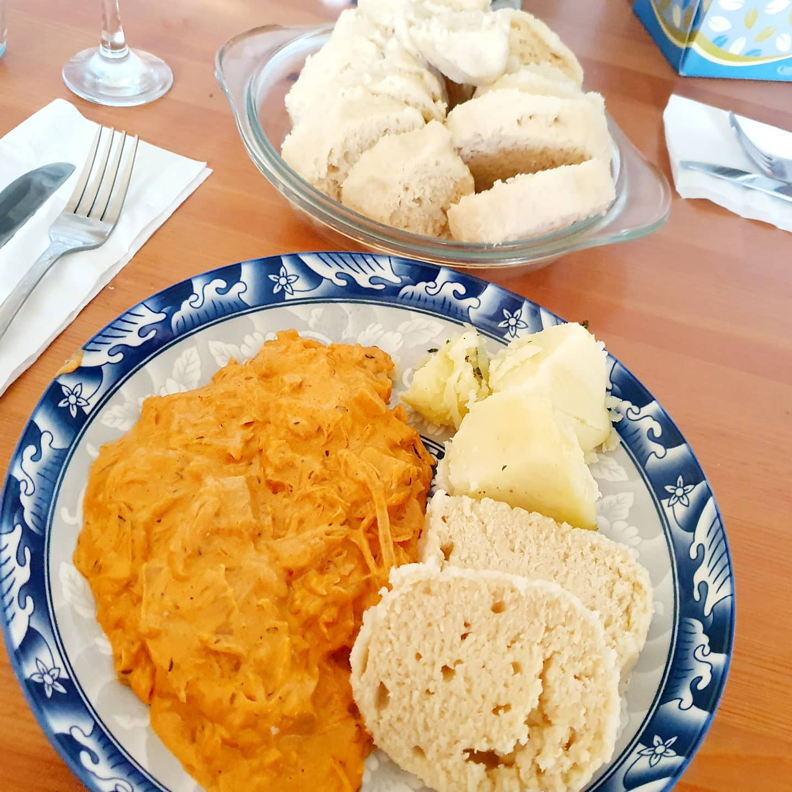

Segedínsky guláš podľa @sereena1974 — Normy Jedál
Segedinsky gulas.( pork,sauerkraut, paprika stew).with homemade dumplings..
#segedinskygulas #segedin #czechdumpling #czechfood #slavicfood #germanfood #paprika #stew #foodie #foodporn #manchester #englishgirl #dinner #goodfood #instafood #foodpics #picoftheday #food #tastyfood #homecooking #freshmade